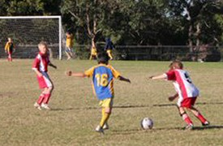

| Match Report - 15 May 2010 |
|
|
|
|
|
|
|
|
|
|
A wonderful team performance saw the North Ryde White Ants stomp home to a great
victory against local rivals Holy Cross College A.
White ants striking duo Oliver & Ryan applied the opening pressure to the Holy
Cross defences. The inevitable cracks were ripped apart by some inspiring on the
ball weaving runs from Ashton and Maxwell. The boys in blue and gold marched the
ball into the back of the net time and time again.
Credit to Holy Cross for knuckling down after the opening goal to level the scores
with an unexpected breakaway run and accurate shot from their striker. The few
chances that presented themselves after that were shut down by some great defensive
runs that had the referee struggling to keep up with play.
The game got rough as frustration built for Holy Cross, with White Ant star Ryan
taking the brunt of the punishment. After spitting out the dirt, Ryan got straight
back into play with a great free kick. Nice one.

Soccer star of the week Ben Harris was robbed of his best goal scoring chance in
the 2nd half when his deadly shot was desparately cleared from the line. Outstanding
strong play from the back and concentration saw Ben lift this week's trophy.

Great team play today, solid defending and impressive attempts at beating the man.
Well done.
- Coach Duncan
|
|
|
|
|
|
Having scored their first goal at last start, U6 White B's have obviously developed
a taste for it and have followed up this week by grabbing 3 more. A stunning double
in the first half by Christian was followed in the second half by Riley's determined
drive from halfway and tap-in.
North Ryde looked dangerous every time they were in possession of the ball, and had
some shots gone a few feet in either direction we could have witnessed every single
player registering points. Joshua & Idan both made attacking breaks, and Alexis &
Blake had shots at goal at various times as well.
Player of the Week went to Riley for a much more focused game. A fantastic effort
by every member of the team this week.
- Will
|
|
|
| U7 Green |
|
North Ryde 6 - All Saints Hunters Hill B 1
|
|
|
|
It was another scintillating soccer match by our young socceroos. We played against
that All Saints team on Saturday (15th May 2010) at Magdala Park. The All Saints
teams, unfortunately, did not have a full complement of players. We were faced with
two choices: 'Loan' (as in professional soccer circles) one of our players to the
other team or play a five-a-side game. Teamwork and solidarity, which has been so
ably instilled by Dave and the other parents in our youngsters, ensured that the
first option was a no-goer and we settled for a five-a-side game.
It was a game that would have thrilled the soccer pundits. Tom showed shades of the
legendary Franz Beckenbauer and played an excellent game at both ends of the field.
Tom made some telling tackles, while scoring two of the side's goals. Hamish
controlled the defence effectively and played a wonderful 'running game', reminiscent
of the great Johan Cruyff. Will was the master of the midfield and like the famous
Frenchman, Michele Platini, played well on both flanks of the field. Will was
particularly effective at taking the ball away from opposing players. Aniruddh has
been growing in confidence with each passing game. He made some magical passes and
was Ronaldinho-like in getting the ball past opposing players with deft moves and
passing. Evan was Beckham-esq in the match. He has a strong leg and kicks the ball
powerfully. Evan also scored two goals in the game. Finn has an acute sense of where
the goal post is and is developing into an excellent striker, along the likes of
those wonderful players, George Best and Ronaldo. Finn scored a goal in the game.
North Ryde played well on Saturday: they defended well and attacked with conviction.
However, the celebrations were muted and we will be treated to some high-energy
displays in future games, right boys? And you are all developing into fine players.
Well done!
- Sham
|
|
|
|
|
|
The match was back at our 'usual' field, Fontenoy 4 at the very decent time of
10:15. The players gathered early for some pre-match training with Chris and were
lucky to have a visit from Kofi Danning from Sydney FC who looked over our pre-match
training. We knew it would be a tough match with Leo unable to make it.
Holy Cross B took their places on the field and we were ready to go. Things got
off to a slow start, with Holy Cross scoring a couple of break-away goals. As usual
we saw some great defending from Dom and some great attacking from Isaak. Our team
scored what was undoubtedly their best goal of the season when Emma dribbled the
ball down the middle of the field, passed the ball to Dom who then passed to Ibrahim
who kicked the goal. It was great see such wonderful teamwork and ball skills in
action.
Unfortunately we then saw Holy Cross score two more goals.
At half time we said farewell to Emma and knew we would miss her great assisting.
The players took their places on the field for the second half. We saw Jake make
a real effort in the second half. He got in there to attack and his sideline kicks
were well placed with North Ryde White A pulling together as a side and doing a
great job of marking players while defending and creating free space when attacking.
Ibrahim and Isaak both had a couple of great runs with the ball and were unlucky not
to score. Sam did some good dribbling when he managed to stay on his feet and blocked
the ball quite well when he couldn't. In the second half we saw an overall good effort
at defending and attacking by all players. Congratulations to Jake for being voted
Player of the Week.
Well done coach and team.
- Sarah and Abdul Zreika
|
|
|
|
|
|
It would be hard to pick a highlight of such a fast paced game. The RDP A team were
very skilled and had obviously trained and played a lot prior.
The accurate ball plays kept coming thick and fast and made for a mainly defensive
game for the NRS White Bees. Cameron could have taken a role in the bodyline movie
for all the saves he made from waist to head high during the 2 halves. We are waiting
for the Soceroos to sign him up for future World Cups. His natural skill and ability
as sweeper is truly extraordinary.
Once again Rishi was rock solid in the midfield and ably supported by Kevin, Liam,
Luca, and Oliver. Emily almost got her first goal of the season but was just cut off
by a determined Panthers player. This weeks training will be on fast dribbling, goal
kicks and side kicks.
The final score did not represent the efforts made by NRS, they played a great game
and every player put all they had into the game, unfortunately it wasn't enough to
keep off the outstanding attack they faced from the mighty Panthers. We learnt a lot
about accuracy of ball placement and passing and hopefully when we face those Panthers
next time we will be able to sting a little harder.
Man of the Match went to Mr Cameron Duffy for his absolute commitment.
- Sarah Robson
|
|
|
|
|
|
The U10 Div 1 juggernaut that had burst into the 2010 season with five straight
wins was finally halted in it's tracks by an impressive display of football by
the Gladesville Ravens team, who took us to task on just about every aspect of
the game on all corners of the Peel Park football pitch.
The Ravens came out firing as soon as the whistle blew and set up camp in our
half for the first ten minutes of the game. They were a well-drilled and
well-organised team that stuck to the basics of the game, and barring any
catastrophic meltdown or fatigue on their part you could sense that our North
Ryde boys were going to be up against it for much of the match. Our defence was
put to the test as the Ravens sent wave after wave of attack towards our goal
line. Tom M was the stand-out workhorse during these exchanges, using speed and
strength to repel the attacks and keep the scoreline on an even keel, and Tim
the Keeper made a sterling effort to keep the ball out of the goals with some
magnificent saves.
Once the dust had settled a bit, North Ryde did start to string together a few
runs that saw them enter the Raven's goal mouth and look for scoring opportunities.
On one occasion David managed to chip the ball over the defence and keeper into
the back of the net, only to have it disallowed due to an earlier handball
infringement. Ravens pressed on, and with just seconds of the first half remaining
they scored the first goal of the match which, to their credit, was an absolute
humdinger. A cross had been made from the deep left to the outside centre of the
North Ryde box, and was struck with a force and conviction into the back of our net
that neither man nor beast could have stopped.
The tempo in the second half was much the same as it had been in the first, and
North Ryde continued to play on the back foot. We were losing most of our one-on-one
encounters and the Raven's rock-solid line of defence ensured that any breaks we made
were easily intercepted or met with a massive kick downfield. Our defence was
continuously under pressure and the Raven's second goal came from a pin-point corner
that was neatly headed into our goals.
North Ryde was awarded a penalty midway through the second half following an
infringement outside the Raven's box, and Adam clawed back one goal for the team with
a high and well-placed strike that sailed over everyone's heads into the back of the
net. Ravens struck back just moments afterwards though with a carbon-copy of their
second goal; a guided corner-kick that parachuted into the North Ryde goal mouth and
was headed in behind the line.
North Ryde plugged on though, despite the chips being down, and kept on trying to
find a pathway through the black- and white-striped shirts. With just a few minutes
of the match remaining Jett found some space on the right wing and used his speed
and strength to power his way down the field and launch a solo attack on the goals.
It was a great effort, and his eventual strike just missed the left post by a few
centimetres.
The final score was a deserving 3 - 1 win to the Ravens. Their team was well
structured and had no noticible weak links on the field, making it very difficult
for our team to mount any serious threats on their goals and reducing us to pot-luck
opportunities. There were plenty of lessons for our team to take on board after
this match, not least of which is teamwork itself, but the loss will at least shake
off any signs of complacency and help them bounce back in future games, fortified
with the knowledge that they are not invincible and can use their combined strengths
to, well, reach their goals.
- Mark Howard
|
|
|
|
|
|
The team had a good warm up before the match. They practiced controlling and passing
in pairs and triples. Some Dads joined in and a few Moms 'copped it' from the odd
stray ball while watching.
After kick-off we dominated the first 5 minutes in the opposition's half. Then they
settled down in attack and we struggled to get the ball out of our half. In the next
15 minutes our goal keeper, Harrison, saved several shots while our central defender,
Matthew tackled and cleared brilliantly.
On the sideline their coach was really voluble and couldn't believe that his players
were unable to score; so full credit to our defenders and keeper. In the final 5
minutes we began to dominate once more and staged several attacks with no success.
With 30 seconds to half-time the opposition suddenly broke through and Harry,
although he came out and took on the striker, was unable to stop the ball being
slipped past him into the net. 1-nil to the opposition at half-time.
 The opposition coach calmed down once they had a goal while we stepped up the volume
to spur our players on. With Matthew off the field, Sam and Thomas had plenty of work
to do and once again Harry made more great saves. Although the opposition probably
had more possession in the second half, North Ryde made several good attacking moves
and were unlucky not to equalize.
The opposition coach calmed down once they had a goal while we stepped up the volume
to spur our players on. With Matthew off the field, Sam and Thomas had plenty of work
to do and once again Harry made more great saves. Although the opposition probably
had more possession in the second half, North Ryde made several good attacking moves
and were unlucky not to equalize.
Our forwards put their defence under plenty of pressure and I suspect that this was
the opposition's closest call to not winning. Notable performances in our side were
Harry with great saves and really good kicking to the half way line. All our defenders
did well, especially Matthew in the first half. Our mid-fielders and strikers were
constrained by the opposition and didn't have much room to manoeuvre.
So, we did really well in the match and the 1-nil loss was not a true reflection of
the game. I reckon the opposition were lucky to win.
- Adrian Kennedy
|
|
|
|
|
|
After numerous trips over the years to play at Kenthurst, it was finally time for
the Kenthurst team to visit our home turf for a bright and early 8:15 match.
With coach's cry of 'play with urgency!' ringing in their ears, our U10's ran
confidently onto the field unphased by the opposition who have won all their matches
this season. Our whole team was on deck for this match which made for 3 subs.

We played an excellent first half and there was not much between the 2 teams. First
half goalie Ben did a superb job to keep a clean sheet with several great saves
earning him player of the match. The rest of the team played well with plenty of
good running and hassling.
Unfortunately we seemed to lose momentum in the second half and this was seized
upon by the opposition who suddenly came alive to dominate most of the play and
score 2 goals.
All in all we played very well to hold the division 5 leaders to a respectable 2 - 0
score. The highest compliment came at the end of the match when the Kenthurst coach
told our coach that we were the best team they had played so far this season. Well
done U 10's!
Keep it up! Keep building up the stamina and stay focused (urgent)!
- Michael Emamooden
|
|
|
|
|
|
Nothing like being back on home turf for the Under 12/6's who grabbed the 3 points
with a late winner to secure a come from behind 3 - 2 win over Normanhurst at the
North Ryde Oval.
This was a gutsy effort by the boys in a game that paired up two fairly evenly
matched teams. There was plenty of attacking raids by both teams, making both sets
of defences work hard and none more so than Connor who was on hand to foil a number
of opposition raids and was a deserving player of the week. Connor backed up from
the school dance the night before and put on a display that was full of determination.
Well done Connor.
In attack, our boys were well supported by Matt and Lukas from the U/11s who again
showed how to place the ball into the opposition net!! Thanks Matt and Lukas.
Consistency and improvement continue to be emerging traits of this team with a number
of players really starting to thrive in their positions. Dom in goal, but who still
likes to test his ball skills with a run in the field; Will in defensive mid, Alex in
central mid, Lucas at centre back/sweeper, Karan at left back who together with Connor
at right back are forming a strong defensive backbone to the team.
In midfield and attack, Kevin, Tom, Cameron, Bezhad and Andrew never seem to stop
running, and I'm sure its only a matter of time before Jackson bags some goals. Keep
up the hard work at training and hold your positions on game day and results like
this will undoubtedly keep coming. Well done.
- David Hoy
|
|
|
|
|
|
We started the game with 14 players (3 reserves), Harry was unfortunately away. The
team were prepped by Paul to face the Epping YMCA Team, who have been placed no 1 or
2 in the competition all season.
Our team made a strong start and all the players should enjoy this result as they
played like there was no tomorrow. Strong defence and feeding the ball into the
opposition defence and onto our forwards was the order of the day. There where many
excellent plays from the whole team.
Here are a few highlights from the game, it was hard to pick from so many:
-
Hayden's goal and rallying the team when setting up for the corners!
-
Kyle's never-say-die attitude and running his heart out even after his failed
goal shot!
-
Cameron's desire to score... and when he eventually did... the classic Leyton
Hewitt fist punching the ground!
-
Lewis' chase to the ball in front of his goal, only just beating the lone
attacker to place the goal kick deep into the second half. Then with a pass,
Chris dribbled past the goalie to gently score, all within 20 secs!
-
Tim playing up front and setting up a goal!
-
Daniel Tidke, scoring 3 goals, wearing a bandage to cover his wounds from last
week, in top form!
Result 6 goals to NRS, Hayden, Daniel T (3), Chris, Cameron and none to Epping YMCA.
A very strong game which every player can be proud of!
Well deserved player of the match was Tim Greer and the trophy was presented by Paul
Uhrig. I would like to thank all the parents who come to support our team, you do
make a difference. A special thanks to Dave Burnard for running the line, again!
- Joe Rosenfels (Manager)
|
|
|
|
|
|
Glenhaven 4 defeated North Ryde 2 (James Hanna goal,Josh Cowan penalty goal).
This was an excellent game of football which we could easily have won. The boys
applied the skills and techniques learned at training and all played with a high
level of commitment and are to be congratulated on a very competitive performance
against a team sitting in equal first place on the ladder.
Once again a slow start allowed Glenhaven to register 2 goals and jump to a 2-0
lead. These goals were probably against the run of play and both resulted from
some hesitancy and disorganisation in our own penalty area. These were the only
real lapses in the game and the defenders rallied for the remainder of the game,
on several occasions through keeping their shape they caught the opposition out
with offside calls. The team once again showed it's character and applied pressure
in attack and were rewarded with a cracking shot from James H which found the back
of the net. The score at half time being 2 - 1 with the boys competing strongly in
every facet of the game.
The second half produced a freakish goal by Glenhaven with a shot (clearing kick?)
from near halfway just clearing the fingertips of our keeper and finding the top of
the net for a 3 -1 lead to Glenhaven. Salt was rubbed into the wound shortly after
when Glenhaven was awarded a dubious penalty for what looked like a clearly
accidental handball, this was converted for a 4-1 scoreline to Glenhaven.
The last 15 minutes of the game belonged to the boys and they rallied strongly and
continually applied pressure on the Glenhaven defence having several shots on goal
unluckily for no result. Their efforts were rewarded when the constant pressure they
were applying told on the Glenhaven defence and forced one of them into a deliberate
handball resulting in a penalty for us. Josh C took the penalty which he clinically
converted for the final scoreline of 4 -2.
This effort was a vast improvement and is a result of the hard work being put in at
training each week and I sense a win in the not too distant future. It is difficult
to single out individual performances from this game as everybody put in and played
to the best of their ability. Congratulations to James and Josh for getting on the
goal scoring list. Liam T played a strong captain's game in defence and attack, Josh
was excellent in his role as sweeper, the other defenders Leo W, Tyler R, Scott J
and Matthew U all showed courage and commitment in defence. Victor T, Gavin H,
Lewis B, James H ,Kenny R, Tim B and Ryan N all combined well in attack with some
great passing interchanges that led to several shots on goal and continually worried
Glenhaven. William G returned to goalkeeping this week in the absence of Sam B and
had a fine game making some great saves some of which were appreciated by the
opposition crowd on the sideline and also his substitute team mates on the
sideline.
Well done to you all. You should all be proud of your efforts as all your supporters
on the sideline were.
- Bill Greer (Manager)
|